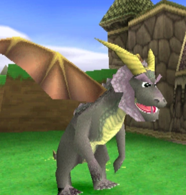
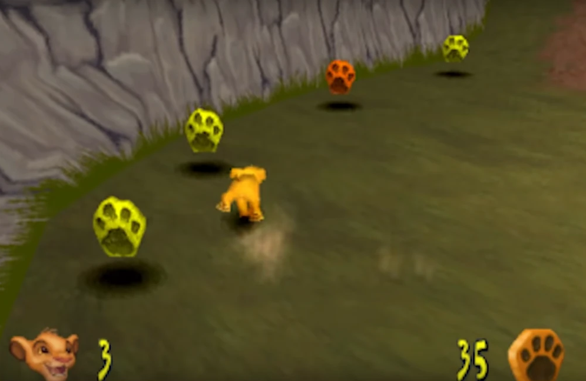
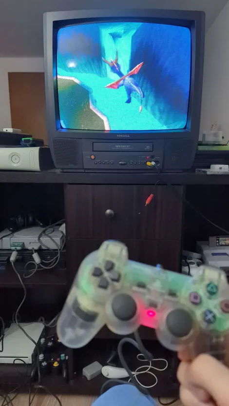

New year, new month, new retro game for the Retro Games Club. The theme for the beginning of the year was to play the first game of a franchise. After a much more uneventful vote than we had for our December game, the group decided on the first Spyro game, for the original PlayStation.
I've never really played PlayStation games.
The first PlayStation console I ever had was a used PS2 that I bought for $20 from a colleague back around 2012, when I was already a working adult and the PS4 was around the corner. I played it a bit, sure, but not much, and never even finished any of the games I had. The second PlayStation console I bought was the PS5 in late 2024, when I was already a father of two children.
That is all to say that I missed pretty much the whole PlayStation library throughout my whole life. As someone in the club said, I come from a Good Christian Nintendo Family™. On a side note, not being familiar with the PlayStation library definitely culled my appreciation of Astro Bot, a game that heavily relies on PlayStation nostalgia.
So I was excited to try a retro PlayStation game, to see what I might have missed.
So I've technically played Spyro a little bit. In early 2025, I inherited a 13 inch CRT TV, and decided I wanted to make a retro gaming setup in my basement. To go with it, I thought I'd buy a used PlayStation 1, and bought a copy of Spyro for it, just so I had at least something to play on it. And I did play it, a little bit. Probably around an hour. So coming into it this month, I had some idea of what I would think about the game.
The execution of the game is definitely interesting. It's pretty obvious Spyro is an answer to Nintendo’s Super Mario 64, but with a PlayStation twist. He's a cute dragon. You run around levels collecting gems (instead of coins) and rescuing other dragons (instead of collecting stars).
But, Spyro does what Nintendon’t. The game added voice acting, for starters, but also went with a humoristic twist to the game.
This game came out in 1999 and was meant to appeal to a slightly older, slightly more edgy audience than Mario's. And it shows.
From the very first cutscene, we see a boom mic as a quick joke, and the plot is explained in maybe 30 seconds that you might miss if you're not paying attention.
But that would be fine, if it weren't for all the ageism. Spyro, like its intended audience, is a young boy, a bit of a know-it-all, definitely “cool”, and without a care in the world for older people.
The game has you rescue dragons in every level, and while some dragons act as tutorials or give you hints on the game's secrets, a lot of them are just throwaway gags about the fact that dragons are old, and Spyro is young. And old people say uninteresting things. Haha.

One of the common themes we discussed on the Discord was specifically how ageist Spyro is and how bad that aged, especially considering all of us playing are in our thirties.

(Enjoy this image of "pattounes" completely without context but which is still related to Spyro)
But what about the gameplay? Well, there's the camera. This is an early 3D game. At the time, all or at least most cameras sucked, so that was expected. I already knew coming into the game that the camera would suck. I found though that after 10-15 minutes of playtime, I got over it and it stopped bothering me. However that meant I couldn't really play in short bursts.
Apart from that, the game is really just a collect-a-thon showing you a percentage of all the things you need to collect. In other words, it's a "pattounes" game (see told you we'd get to it).
It's hard to play this game and not compare it to Super Mario 64, which came out a couple of years earlier. I think the biggest difference is that Mario 64’s collectibles had more design into it, and felt less like they were just put in the level for the sake of making it interesting, and more like they'd made an interesting looking level and added collectibles to make it fun to explore.
Spyro, much like Day Of The Tentacle last month, is definitely a product of its time. It's also the only PS1 game I've ever played, which is interesting, since all the aspects of the PS1 are, to me, directly attached to Spyro.

It was also definitely more fun to be able to play it on the original console on a console-appropriate TV. I've had that setup for almost a year, and don't get to use it very often as I normally game on a handheld console or directly on my PC. That being said, I definitely missed the convenience of save states, even if only so I could save my game and stop playing whenever I wanted instead of having to search for a save point.
I'm glad people were more into Spyro than they were into Day Of The Tentacle, too. The server became a bit more active, and it was fun to see people experiencing the game at the same time.
Next month we'll be playing Blast Corps for the Nintendo 64, a game I've only barely heard of. I'm curious what I'll think about it.